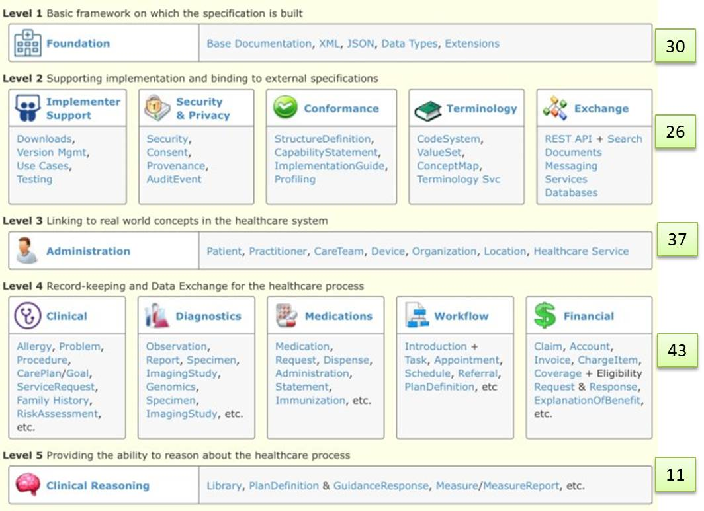
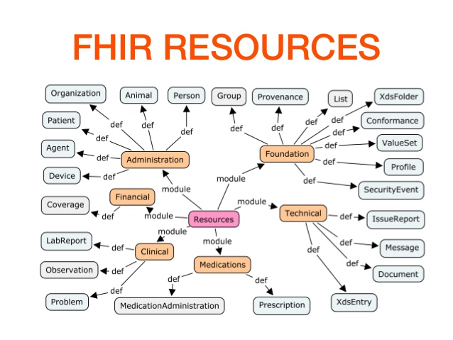

Health | References (in natmaterial\health)
- DISI - Mirth Intro (on natMaterial ...it.unibo.mirth.java/userDocs)
- DISI - Mirth experiments (on natMaterial ...it.unibo.mirth.java/userDocs)
- DISI - HapiUsage.html (on natMicroservices .... it.unibo.mirth.java/userDocs/)
- DISI - HapiFhirUsage.html (on natMicroservices .... it.unibo.mirth.java/userDocs/)
HL7
| Introduction |
Genesi e stato dell’arte della famiglia HL7 HL7 Tools & Resources Case studies. |
| Specification | HL7 Version 2 Product Suite. HL7 Version 3 Product Suite. The Version 3 Normative Edition represents a new approach to clinical information exchange based on a model driven methodology. The V3 specification is built around subject domains that provide storyboard descriptions, trigger events, interaction designs, domain object models derived from the HL7 Reference Information Model (RIM). |
| Examples |
The US federal government does EHR testing of HL7 content, so that's a good resource for HL7 examples,
although they only have HL7 2.5.1 (not 2.7 yet). Here's four sites that have respective data:
|
| Forge HL7 V3 Generator | HL7 V3 Generator HL7 V3 Generator Releases |
| HL7 V3 Publishing Tools | V3 Publishing Tools |
| Sample ER7 Messages | Sample ER7 Messages Caristix Test |
EHR (Electronic Health Record)
RIM (Reference Information Model)
Core concepts: entity, role, partecipation, act).
Now: Application Implementation and Design HL7 "User Group"
V3 RMIM Designer (in Visio)
Tools for RIM based software development
Tools for RIM based software development
Open Mapping Software (Transforms By Example-TBX )
Transforms By Example in Healthcare
TBX-For-V2-and-FHIR
phi TECHNOLOGY
The RIMBAA Technology Matrix
FHIR (Fast Healthcare Interoperability Resources)
V3 based on RIM is often impratical in the real world. FHIR aims at using the best parts of RIM, while keeping complexity under control. Moreover it is 'EHR agnostic'.FHIR modules
Foundation Implementer Support Security & Privacy Conformance Terminology Linked Data Administration Clinical Medications Workflow Financial Clinical reasining
FHIR resources
The FHIR datamodel is being instantiated in a set of (nore than 150) modular Resources. See https://www.hl7.org/fhir/.|  |  |
clinFHIR Launcher by David Hay (Bundle.entry.resource.where(resourceType='Condition') Bundle.entry.resource.where(resourceType='Condition').code.coding.displayFHIRPath (Normative Release) FHIRPath Hay blob Publicly Available FHIR Servers for testing HAPI-FHIR library, hapi-fhir GIT by James Agnew http://hapi.fhir.org/ (DEMO using public FHIR server UHN_HAPI Server - R4 FHIR) |
FHIR Connector Extension (3.9) Install Mirth FHIR Extension Example Channel TechnoSoft: FHIR Setup on Mirth Connect / NextGen Connect Mirth FHIR UserGuide Resource Patient - Examples Applicadia Clinical Reporting Demonstration - Video |
CDA (Clinical Document Architecture)
Software Implementation of CDAModel Interchange Format
MIF based code generation
There are some HL7 version 3 based projects that don't have a published set of MIFs - they only have normative XML schema. These projects mostly date from the early days of HL7 version 3, when MIF had not established itself as the metamodel expression used for HL7 version 3.